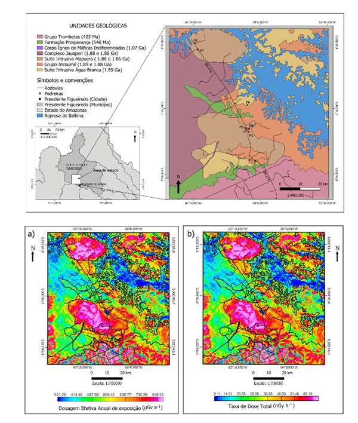

Análise de dados aerogeofísicos sobre a exposição de radônio nas pedreiras ao longo da BR-174, Presidente Figueiredo - AM

Resumo em Português
Esta proposição coaduna-se com o recente Programa Brasileiro de Risco de Exposição ao Radônio, que estuda o radônio e os riscos que ele oferece à saúde da população brasileira. O objetivo principal consistiu em identificar e mapear áreas propensas à exposição ao radônio no município de Presidente Figueiredo, utilizando técnicas aerogeofísicas para determinar focos de elementos radiativos como o eU, eTh e K. Os resultados mostraram que parte das unidades geológicas mapeadas apresentaram elevados teores de radiação. Ao ar livre, estas unidades não oferecem tantos riscos à saúde da população. O problema do radônio está em ambientes internos fechados (casas, prédios, minas), pois este gás acumula-se dentro desses locais e pode criar atmosferas radioativas. Assim, é importante mapear estas unidades, pois locações instaladas sobre elas correm o perigo de acumular quantidades significativas de gás radônio e colocar em risco à saúde de pessoas expostas a ele.